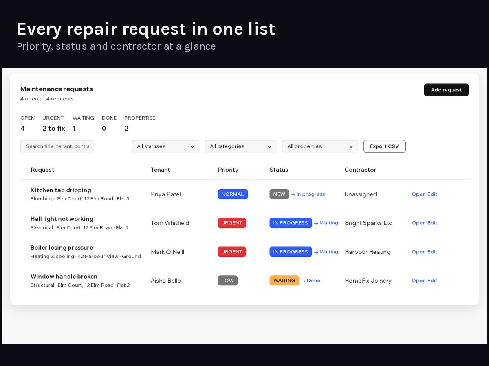

Maintenance: Property Requests
Log tenant repairs and track each one to done
- Every tenant repair request in one list
- Priority, category and status at a glance
- Contractor and due date on Premium
- Free covers one property and 10 requests

What it does
A leaking tap arrives by phone, a broken window by text, a faulty boiler at the front door. Small landlords and property managers keep these jobs in their head or in a chat thread, and then cannot answer a simple question: did we deal with the boiler at Elm Court?
This app is one register for tenant repair requests. Each one records the property and unit, what needs fixing, the category, how urgent it is, who reported it and how to contact them. Requests move through New, In progress, Waiting and Done, so the list always shows what is still open.
The dashboard opens on the request table with counts for open, urgent, waiting and done work. Search finds a request by title, tenant or contractor, and the filters narrow the list by status, category or property. Any request opens into a panel with the full report, the contact, the contractor, the due date and one-click status buttons.
The free plan covers one property and ten requests, with the status list, categories, priority and tenant details. Premium removes both caps and adds contractor assignment, due dates and a CSV export of the current view.
Nothing is emailed: requests stay in the site's own data and show in the dashboard.
Price
Free
- One property and ten requests
- Categories, priority and tenant details
- New, In progress, Waiting and Done
Premium
$5/month, or $4/month billed yearly ($48/year), 14-day free trial
- Unlimited properties and requests
- Contractor assignment and due dates
- CSV export of the current view